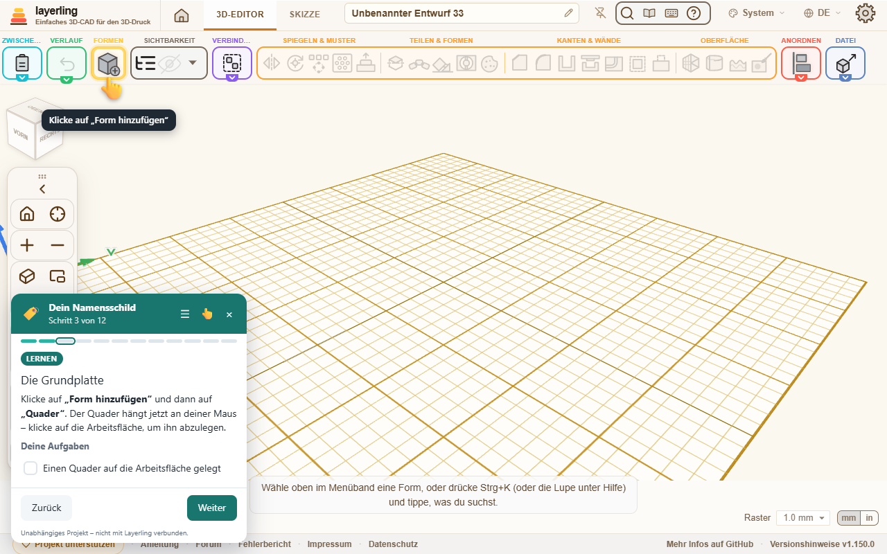

A free browser extension with a guided course: a hand shows you where to click, tasks tick themselves off – and you end up with a part for your 3D printer. For ages 8 to 99.
For Chrome, Edge and Brave · free · open source (MIT) · independent project, not affiliated with Layerling.

A clear path from the first box to a finished printable part – step by step inside the editor.
The hand finds the right button – even in collapsed toolbar sections.
Shapes, sizes, holes and groups are recognised. Generous checks, with confetti.
From “New to this” to “I know Tinkercad” – the help adapts.
German and English. The course follows Layerling’s language.
No account, no server, no data sent anywhere. Everything stays in your browser.
Box, exact sizes, text on the plate, a hole shape, grouping, STL export.
Sketch an outline, round the corners, extrude, engrave text.
Hollow out a body, hole pattern all around, rounded edges.
Sketch a profile with an angle, chamfers, overhang warning.
Threads, two parts with clearance, measuring and aligning.
Gears, axles and several build plates.
The extension runs only on https://layerling.com/. It collects no personal data, has no server and no account, and sends nothing anywhere. Course progress and settings stay in your browser. The shapes of the open design are only read to check tasks.